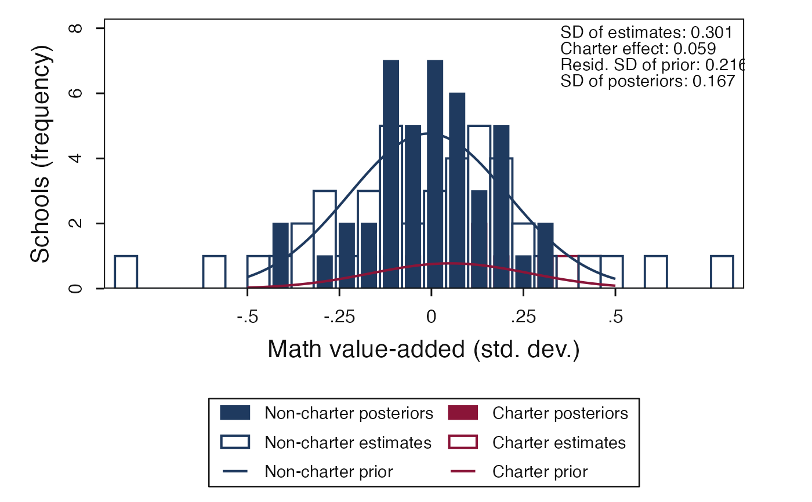
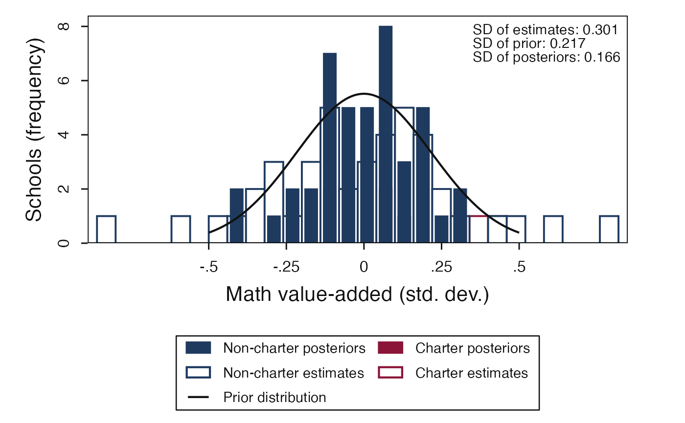

Plot VAM estimates, posterior means, and normal prior overlays
Source:R/plot-vam-prior-posterior.R
plot_vam_prior_posterior.RdDraws the Lane B companion-style VAM histogram figures: open bars show raw
school value-added estimates, filled bars show empirical-Bayes posterior
means, and normal prior curve(s) are scaled to the histogram frequency axis.
Use method = "unconditional" for a single prior and
method = "conditional" for sector-specific priors.
Arguments
- x
An
eb_vam_fit/eb_fit,eb_estimates, or data frame with VAM estimates. Common columns such astheta_hat,se,s,school_id, andcharterare accepted.- method
"unconditional"for the common-prior EB plot or"conditional"for the sector-specific prior plot.- group
Optional grouping vector or grouping column name. When omitted,
charter,sector, orgroupcolumns are detected when available.- binwidth
Histogram bin width on the value-added scale. Default
0.06.- posterior_barwidth
Width of filled posterior bars. Default
0.04.- curve_range
Length-two numeric range for evaluating prior curves. Default
c(-0.5, 0.5).- n_grid
Number of prior curve grid points. Default
501.- annotate
Whether to draw companion-style summary text. Default
TRUE.- target_id
Optional internal replication target identifier. The recognized VAM prior/posterior target IDs are
fig_unconditional_ebandfig_conditional_eb; both are deferred Lane B contracts, not protected companion parity targets.
Value
A ggplot object. The internal eb_figure_data object used to
build the plot is stored in attr(plot, "eb_figure_data").
Details
The plot follows the companion step5_3_run_vam.do graph construction.
Histograms use frequency counts with default bin width 0.06; posterior
bars are narrower (0.04) so the raw-estimate bars remain visible. Prior
density curves are multiplied by the relevant school count and bin width so
that they sit on the same frequency scale as the histograms.
With bundled package data, this helper targets the companion simulation
figures. The deferred target IDs fig_unconditional_eb and
fig_conditional_eb are Lane B contracts tied to the vam_schools source
shape and caption-number receipts. They are not protected Boston parity and
do not claim to reproduce restricted Boston-school records that cannot be
shipped with the package.
Examples
data("vam_schools", package = "ebrecipe")
plot_vam_prior_posterior(vam_schools, method = "unconditional")
 plot_vam_prior_posterior(vam_schools, method = "conditional")
plot_vam_prior_posterior(vam_schools, method = "conditional")

plot_vam_prior_posterior(
vam_schools,
method = "unconditional",
target_id = "fig_unconditional_eb"
)
